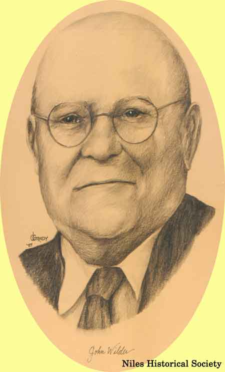
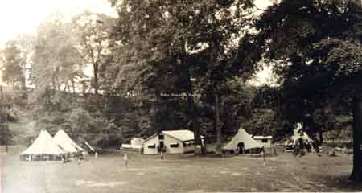
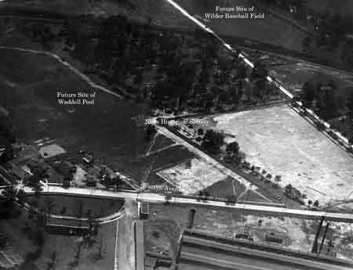
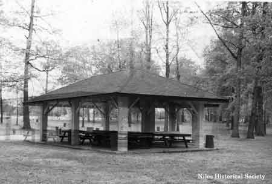
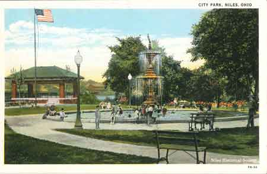
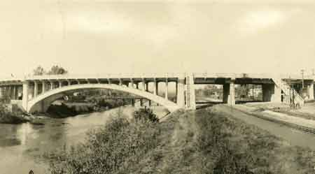

John Wilder
{kind=link}

As a citizen of Niles, John Wilder was many things. He was a manufacturer, a banker, a leader of War Bond drives, a church man, and a member and leader of countless groups for community improvement and service.
{kind=link}

Niles Kiwanis Club was formed in 1922. In 1924, Mr. John Wilder, Niles industrial leader, was president of the Niles Kiwanis Club. He was largely responsible for involving all Trumbull County Kiwanis clubs in this new venture. They set up a Fresh Air Camp for special children.

Mrs. J.D. Waddell tosses out the first pitch at the opening of Waddell Park baseball field.

1930 Waddell Park Plans.
{kind=link}

Aerial View of Waddell Park, 1930 ca.

Aerial view of Wilder Field, 2024.
{kind=link}

During the summer of 1931, a picnic pavilion was erected at Waddell Park now known as Shadyside Pavilion.

1931 picture of the Niles City Band in Central Park in the Thomas Pavilion. Band directed by Arnold Campana.
{kind=link}

John Wilder oversaw the building of a pavilion in July 1928 in Central Park for band concerts, public speaking, and more.
{kind=link}

The new Viaduct was dedicated on October 28, 1933.